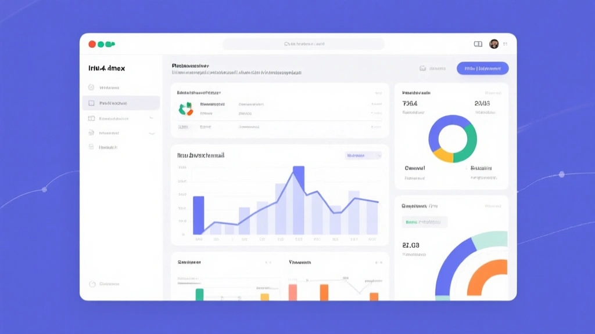

Behavioral personalization in transactional emails isn’t about gimmicks; it’s about aligning content with intent at the moment of delivery. When your automation learns from opens, clicks, and downstream actions, you can reduce complaint rates and increase overall deliverability—even if your sending volumes stay steady.

Why behavioral signals matter more than volume
ISPs like Gmail and Outlook increasingly treat engagement signals as a primary ranking factor. A campaign that targets users with relevant content based on past activity can improve engagement metrics without increasing irritants like frequency. Behavioral personalization reduces the likelihood of spam complaints and boosts long-term sender reputation because you meet intent, not just reach.
Sending uniform transactional messages to all recipients, ignoring past actions and preferences.
Segmenting based on behavior (clicks, reading time, product view) and tailoring recommendations and timing accordingly.
Three signals that move deliverability
1) Read-time threshold: treat messages as soon as a reader engages beyond a minimum minute threshold. 2) Click depth: measure how deep users dive into content. 3) Conversion intent: track downstream events like purchases or form submissions to gauge true value.
Start small: pick one behavioral signal per week and validate improvement with a simple A/B test on a single list.
Implementation checklist
- Map core transactional templates to key events (order, shipment, password reset).
- Capture signals: opens, reading time, click paths, and downstream conversions.
- Create 2–3 variants per signal: different subject lines, preheaders, and content blocks.
- Test delivery windows: see if early vs. late sends change engagement for your audience.
Two concrete workflows
Two-column path to action
Problem
One-size-fits-all messaging hurts relevance and inbox scores.
Solution
Behavior-driven content and send-time optimization raise both engagement and deliverability.
Practical steps to start this week
- Step 1Audit transactional templates for personalization potential.
- Step 2Add basic behavioral signals and a simple variant set.
- Step 3Run a 2-week test and compare with control.
In practice, deliverability follows engagement. If you can demonstrate relevance, ISPs reward you with better inbox placement and a steadier sender reputation.
The Bottom Line
Behavioral personalization in transactional emails can lift deliverability by aligning content with user intent. Start with one signal, measure impact, and scale thoughtfully.